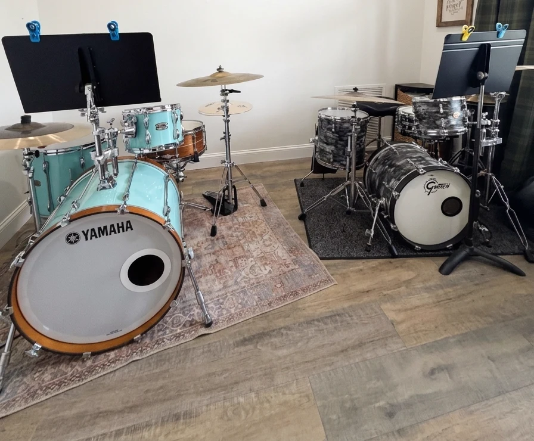
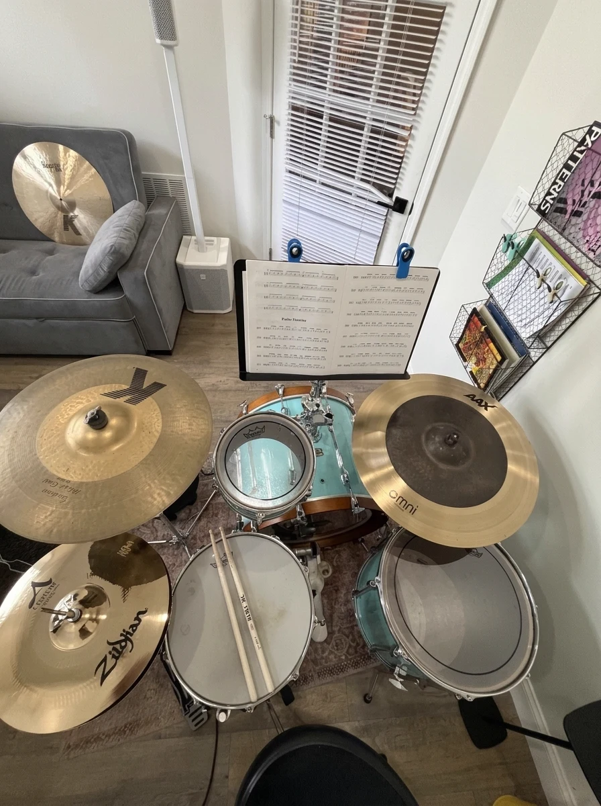
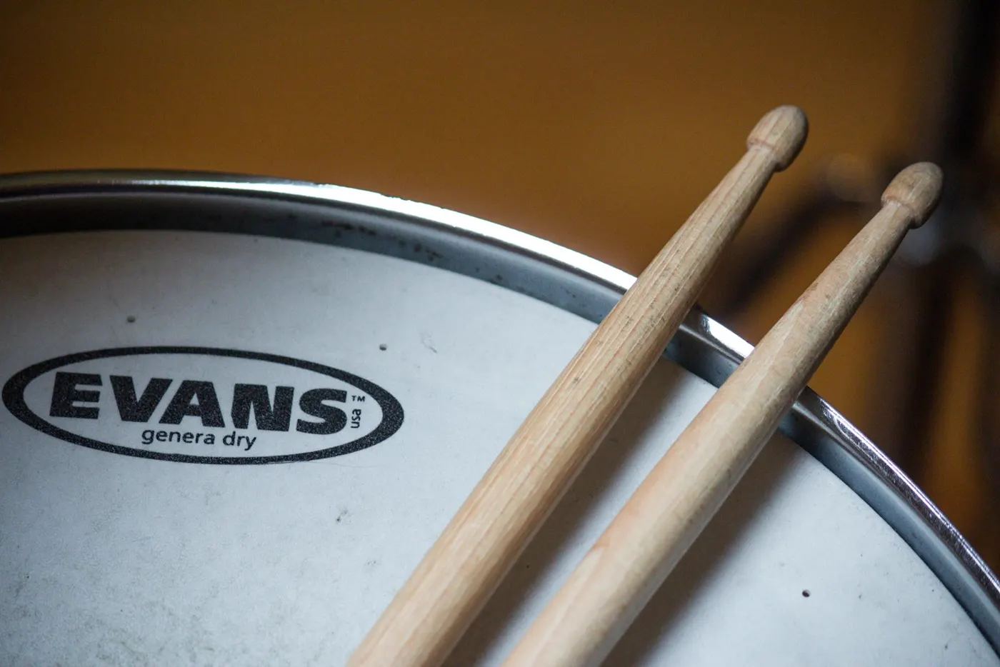
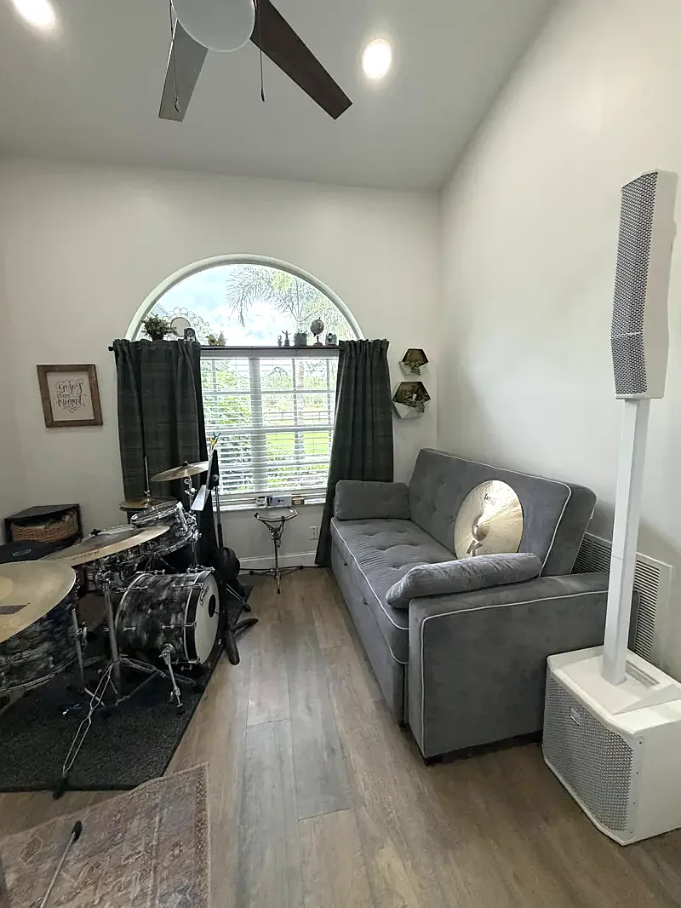

Drum Lessons in Loxahatchee, FL
Drum lessons in Loxahatchee for kids, teens and adults, taught one-on-one by Paul Charron. Some students have never held sticks, others have played for years and want their technique sorted out. Lessons are at his studio in The Acreage, on two full kits.
- Teaching since 2008
- Rated 5.0 on Google
- All ages
Rated 5.0 on Google. Read the reviews.

"Paul has been fantastic with my 9 year old son who is learning to play drums with no previous drum knowledge. The growth I have seen in him in just 2-3 months is incredible."
Who takes drum lessons with Paul
Kids and teens
Parents reviewing Paul on Google write about a 9 year old who started with no drum knowledge, and two brothers, 12 and 14, who had been in lessons for over a year.
Adult beginners
It is not too late to start. Students as old as 82 have taken lessons here, and one reviewer came to Paul to correct technique problems that had bothered them for many years.
Serious players
One student took lessons with Paul for nearly 10 years and now plays as a percussionist around Florida.
- Where: Paul's home studio in The Acreage, Loxahatchee.
- When: Monday to Friday 9 AM to 8 PM, Saturday 9 AM to 1 PM. Closed Sunday.
- Lesson length: NEEDS CLIENT: how long is a lesson?
- What it costs: NEEDS CLIENT: Paul's price, or his choice to leave it off the site.
- How to start: call or text (561) 350-1434, or send the short form.
What Paul's drum students and parents say
In-person and online drum lessons

In-person lessons at the studio
The room has two full kits, a Yamaha and a Gretsch, each with its own music stand. Teacher and student can both play.
Paul teaches technique, and he teaches how to practice. One student who stayed nearly 10 years called that part "the key to success for all musicians".
Lessons run Monday to Friday between 9 AM and 8 PM, and Saturday mornings until 1 PM.
NEEDS CLIENT: lesson lengths, and whether Paul also teaches in students' homes.
Book an in-person lesson
Online drum lessons
NEEDS CLIENT: Paul wants to try video lessons alongside in-person lessons. Is that a live one-on-one lesson over a video call, or recorded lessons to buy? What does a student need at home (a kit, a practice pad, a phone or laptop)?
Online drum lessonsHow drum lessons with Paul work
NEEDS CLIENT: Paul to confirm or correct these three steps in his own words.
-
Book a first lesson
Call (561) 350-1434 or send the form on this page. Say who the lesson is for and what they want to play.
-
Come to the studio
You sit at one kit and Paul sits at the other. NEEDS CLIENT: what happens in a first lesson?
-
Practice between lessons
NEEDS CLIENT: what does Paul send students home with (pages from a book, a play-along track, a recording)?
The drum studio in Loxahatchee
The lesson room has two acoustic kits facing the same way, a seafoam green Yamaha and a black and white Gretsch. Each has its own music stand. Method books and charts hang in wire racks on the wall.
With two kits, Paul can play a groove, the student plays it back, and then they play it together. Nobody gets up to trade seats. NEEDS CLIENT: confirm this is how Paul uses the two kits (inferred from his photos).
There is a couch in the room. NEEDS CLIENT: can a parent sit in on a child's lesson?
NEEDS CLIENT: is Paul fine with his street address on the website? It already shows on his Google profile.


About Paul Charron
Paul Charron has taught drums since 2008. He started in Boynton Beach and now teaches from his studio in Loxahatchee. His students have been as young as 2 and as old as 82.
He takes complete beginners, and experienced players who want to go further. His focus is a strong foundation and proper technique, so that students, in his words, "gain the skills and confidence to excel on the drums to any level they desire".
"I took lessons from Paul for nearly 10 years. Paul has spent years reworking his technique into the most highly efficient and relaxed way to play the drums. ... Paul goes above and beyond simply teaching you how to play, but how to correctly practice too, which is the key to success for all musicians."
NEEDS CLIENT: a photo of Paul at the kit, who he studied with, the bands he plays in, and whether he wants "veteran-owned" mentioned (it is ticked on his Google profile).
Paul also plays out. A bass player who works with him wrote this on Google:
"I'm a bass player that has been playing with Paul for the last year and a half..He's one of the most Musical and skilled drummers I have ever worked with(great singing voice also) he's very friendly and enjoys passing on his well of knowledge."
Free practice tools
Three tools to use at home between lessons. They run in your browser.
Drum beat maker
Six drum sounds, starting grooves, swing, and a link that saves your beat.
Open the beat makerOnline metronome
Tap tempo, 2 to 7 beats in a bar, and a setting that speeds up as you play.
Open the metronomePractice timer
Splits a practice session into blocks and chimes when it is time to move on.
Open the practice timerQuestions about drum lessons in Loxahatchee
Where are the drum lessons in Loxahatchee held?
In Paul's home studio at 6449 143rd Dr N, Loxahatchee, FL 33470, in The Acreage.
How much do drum lessons cost in Loxahatchee?
NEEDS CLIENT: Paul's prices, or his choice to leave them off the site.
Do I need my own drum kit to start lessons?
Not for the lesson. The studio has two full kits and you play one of them. NEEDS CLIENT: what Paul tells beginners about practicing at home without a kit.
Are the drum lessons private or in a group?
Private. It is always one student with Paul.
Am I too old to start drum lessons?
No. Paul's students have been as old as 82, and he takes complete beginners.
What ages does Paul teach?
From 2 to 82 so far. Paul has been teaching since 2008, beginner to advanced.
When are drum lessons in Loxahatchee available?
Monday to Friday from 9 AM to 8 PM, and Saturday from 9 AM to 1 PM. The studio is closed on Sunday. NEEDS CLIENT: confirm these Google hours are his real teaching hours.
Does Paul teach online drum lessons?
NEEDS CLIENT: see the online lessons note above.
Which towns do Paul's drum students come from?
The studio is in Loxahatchee. Royal Palm Beach, Wellington, Palm Beach Gardens, West Palm Beach and Lake Worth are all within a drive, and the distances are listed below. NEEDS CLIENT: the towns his students really drive in from.
Book a drum lesson in Loxahatchee
Tell Paul who the lesson is for and how to reach you, and he will call you back to set a time. Or call or text him at (561) 350-1434. NEEDS CLIENT: confirm Paul takes texts on this number.
DRAFT NOTE: once Paul's hours are in My Music Staff, this form is replaced by the pick-a-time form on the booking placeholder page.
Just have a question first? Send Paul a message.
Already a student? Sign in to the student portal.
DRAFT NOTE: this is Paul's live My Music Staff sign-up form. Anything submitted here lands in his account as a lead, so do not test it with made-up people.